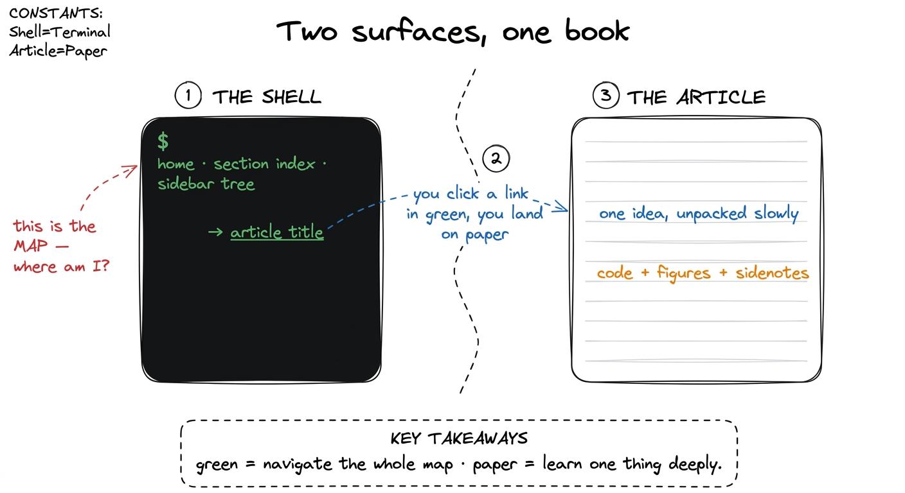
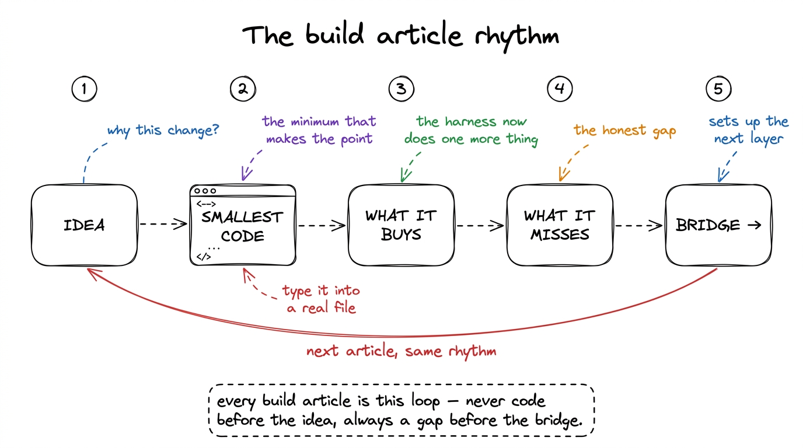
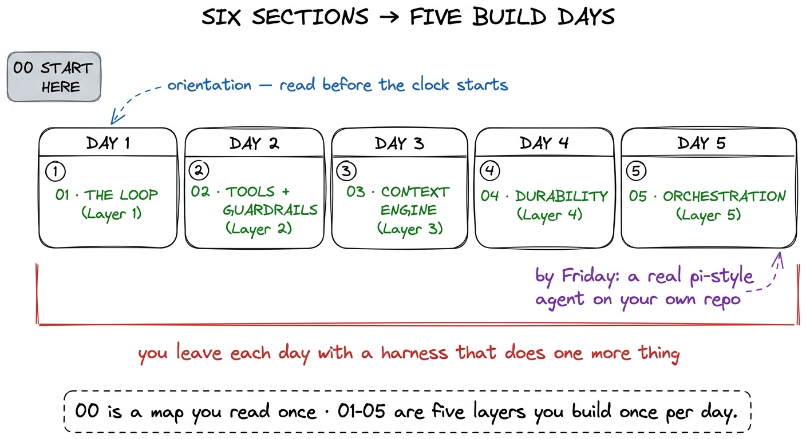
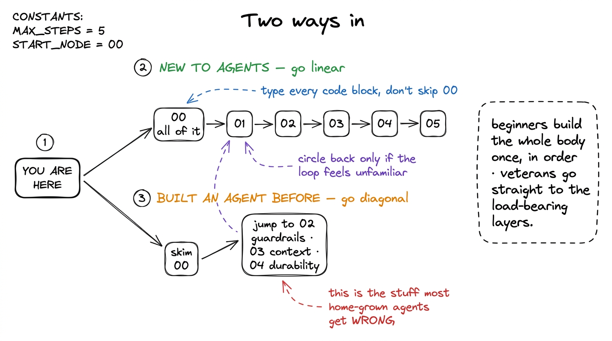

How to use this site
This is a book you run, not just a book you read. Every idea in it ends at a piece of a working coding agent — a harness — that you build with your own hands, layer by layer, in the spirit of pi: small, legible, and entirely yours. So before you dive into Layer 1, spend five minutes here learning how the site is put together and how to move through it, because the layout was designed to teach a specific way, and knowing that will save you a lot of scrolling.
Let me show you the two surfaces you'll live in, how the code you write fits between them, how the six sections line up with the five live days, and — depending on whether you've built an agent before — where to actually start.
Two surfaces: the terminal shell and the paper article
The first thing you'll notice is that this site looks like two different sites glued together, and that is on purpose.
The shell — the home page, the section indexes, the sidebar tree on the left — is a dark terminal. Phosphor-green text on near-black, monospace everything, → Article Title arrow-lists, term chips like stop_reason and CLAUDE.md. It's the map. It's where you see the whole territory: six sections, every article, where you are in the build.
The article — the page you're reading right now — is the opposite: warm off-white paper, a calm serif, a wide right gutter for notes. It's the notebook. It's where one idea gets unpacked slowly, with code and figures, the way you'd work through something in a lab book.1 This split is borrowed straight from the way the best systems writing feels — terminal on the outside, notebook on the inside. The contrast isn't decoration; it's a signal. When you're in green, you're navigating; when you're on paper, you're learning one thing deeply.

figure rendering · The two surfaces: the dark terminal shell is the map you navigate; theA few concrete things about the surfaces that pay off immediately:
The left sidebar is the full article tree, grouped by section, collapsible with − and +. The article you're on is the highlighted row. This is your primary way to move — treat it like a table of contents that's always open.
The right gutter holds sidenotes — the small numbered notes in red that you'll see scattered through every article. They carry the caveats, the real-world "except when…", and cross-links to sibling chapters. They're deliberately off the main line of thought so the argument stays clean; dip into them when a claim makes you curious, skip them when you're in flow.2 On a narrow screen the gutter can't fit, so sidenotes collapse into tap-to-expand footnotes at the end of their paragraph. Same content, same red number — just folded in. Nothing is lost on mobile.
Inline code renders in red. Any time you see something like messages, run_bash, or stop_reason in that crimson monospace, it's a literal identifier, tool name, or value from the code — not English. Your eye will learn to jump to them.
Cross-links are everywhere and they matter. When a sentence links to something like your first bare harness, that's not a footnote — it's the actual next or previous step in the build. The book is a graph, not just a line; follow the links when a concept references a piece you haven't built yet.
The build-along code: the third surface
The two visible surfaces have a silent partner: your editor. This book is a build-along. You are not meant to read it with your hands in your lap.
Almost every article outside the pure-concept ones follows the same rhythm, and it's worth naming so you can lean into it: idea → the smallest code that shows it → what that buys you → what it still misses → the bridge to the next layer. The code blocks are tagged with a language (usually ```python) and are deliberately the minimum that makes the point. You should type them — or paste them — into a real file and run them.

figure rendering · The rhythm every build article follows: idea first, then the smallestHere's the shape of what you're building toward, so you can see how small the core actually is:
def run_agent(user_request):
messages = [{"role": "user", "content": user_request}]
while True:
reply = call_model(messages, TOOLS) # ask the model
messages.append({"role": "assistant", "content": reply.content})
if reply.stop_reason != "tool_use": # no tool? we're done
return text_of(reply)
results = run_requested_tools(reply) # act on the machine
messages.append({"role": "user", "content": results})
# loop: the model now sees the results and decides what's nextThat loop is the entire heart of a coding agent, and you'll derive it from scratch on Day 1. Everything after it — tools, guardrails, the context engine, durability, orchestration — is a layer wrapped around that skeleton. Keep one project folder open the whole week. Each article adds to the same growing harness; by Friday it's a real thing you can run on your own repo.3 pi's whole pedagogical trick is that its harness is small enough to hold in your head — a few files, not a framework. We follow the same discipline here on purpose: you should be able to read your entire agent in one sitting at the end of the week. If a layer starts to feel like magic, you've drifted from the point.
Where an article is pure concept — what is a harness, for instance — there's no code to type, just a model to build in your head. Those are the shorter reads. The build articles are longer and denser, and they're where you should slow down.
How the six sections map to the five days
The book has six sections; the live workshop runs five days. They line up cleanly once you see that Section 00 is orientation, not build time.

figure rendering · The six sections against the five live days: Section 00 is orientationHere's the mapping in words:
- Section 00 — Start Here (this section): orientation and motivation. What is a harness, why "just call the API" fails, and the vocabulary of prompt vs context vs harness engineering. Read it before Day 1 so the clock starts with you already oriented.
- Section 01 → Day 1 — The Loop (Layer 1): derive the agent loop from first principles and build your first bare harness — the smallest thing that genuinely acts.
- Section 02 → Day 2 — Tools & Guardrails (Layer 2): give the agent hands via tool schemas as contracts, then make those hands safe with permission gates and a sandbox.
- Section 03 → Day 3 — The Context Engine (Layer 3): manage the scarcest resource in the system with compaction and a memory layer.
- Section 04 → Day 4 — Durability (Layer 4): survive crashes and hiccups with checkpointing and self-healing loops.
- Section 05 → Day 5 — Orchestration (Layer 5): scale past one context with sub-agents and a human-in-the-loop gate.
Each day is self-contained enough that if you miss one you can catch up from the section, but the harness is cumulative — Day 3 assumes the tools from Day 2 exist. The two case studies we return to throughout, Claude Code and Hermes, aren't separate chapters; they show up inside the layers, so you see how a real, shipped harness solved the exact problem you're building.
A suggested reading order
Two kinds of reader open this book, and they should not read it the same way.

figure rendering · Two reading paths: beginners go linear and type everything; people whoIf you've never built an agent: go straight through, in order, and read all of Section 00 before touching code — it's the mental scaffolding the rest stands on. Type every code block into a real file and run it; the point of a build-along is that the concept lands in your fingers, not just your eyes. Don't chase the cross-links on your first pass unless a sidenote genuinely stops you — save the graph-hopping for the second read. If a page feels too dense, that usually means the page before it deserves another look; the book is deliberately incremental, so gaps compound.
If you've built agents before — you've written a loop, wired up some tools, shipped something — skim Section 00 for the vocabulary (especially prompt vs context vs harness engineering, because we use those words precisely) and then jump to where the real engineering lives. In my experience the layers that separate a weekend agent from a trustworthy one are the ones people skip: guardrails (Layer 2), the context engine (Layer 3), and durability (Layer 4). Those three are where home-grown agents quietly fall over, and they're the reason this book exists.4 A working demo and a survivable agent are very different animals. The loop is easy — most people get there in an afternoon. It's the permission gate you didn't build, the context you didn't compact, and the checkpoint you didn't write that turn a slick demo into something you can't actually leave running. If you're short on time, start there. Circle back to Layer 1 only if the way we derive the loop looks different from how you built yours — the framing pays off later.
Either way, the destination is the same: a small, honest, pi-style harness you understand top to bottom, running on your own code. Turn to green, open the sidebar, and start with what is a harness.